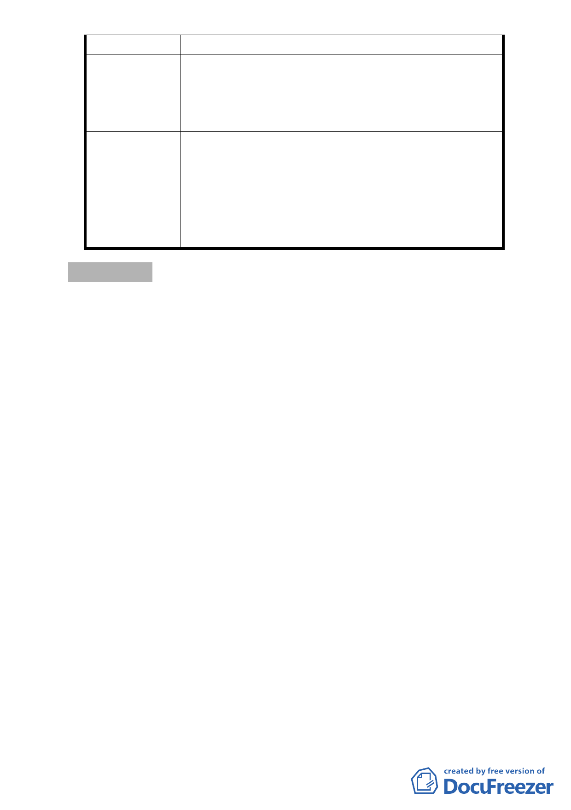

3. 希望比照建蔽率與容積率放寬。
1. 西區不能與東區比。
建 議 辦 法 2. 是早期繁榮，房屋擁擠，要西區再發展，應檢討為
西區量身訂作的才能再發展，否則是零。
PS：有需要能參加都委會說明會，提建議。
1.本案主要計畫通過，未來則透過本案細部計畫變
更、都市設計及土地使用開發許可審議，於土地開
委 員 會 決 議 發時依開發案對環境的貢獻度，提供容積適度調整
之機制，以引導都市發展。
2.建議市府都市發展局積極處理鐵路地下化沿線土地
使用之調整。
討論事項 二
案名：變更臺北市文山區景美溪左岸(萬壽橋至道南橋間)機關用
地、公園用地、道路用地為第三種住宅區、道路用地、公
園用地細部計畫案
案情概要說明：
一、本案位於景美溪左岸堤防邊、萬壽橋至道南橋間狹長地帶，
計畫面積約7,260平方公尺。
二、計畫緣起與目的：
本計畫區於69年12月4日公告「配合景美溪堤防修訂附近
地區主要計畫」案內變更農業區為住宅區，於細部計畫另劃
設機關用地、公園用地與道路用地，開發計畫則採市地重劃，
並以市地重劃方式取得道路、公園用地，機關用地則以徵購
取得。
惟迄今未開闢，本案地主於文山區都市計畫通盤檢討時
陳情，經本會第560次委員會議決議：「本陳情土地原則採市
地重劃方式整體開發，請都市發展局與土地開發總隊進行可
行性評估後，另案辦理」。
市府發展局函詢民政、社會等局對該機關用地無使用需
求，經考量土地開發之公平性與合理性，擬針對機關用地附
近街廓範圍，變更公共設施用地面積及位置，並維持採市地
-3-